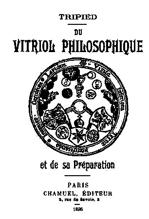
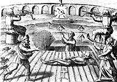

Le Vitriol Philosophique Tripied
revu le 15 mars 2004
Introduction : ce traité, ou plutôt ce long commentaire, est absolument unique. L'auteur inconnu, déguisé sous le pseudonyme de Tripied, y fait étalage en savoir de vitriol. Très curieusement, ce traité présente parfois des analogies avec le Mystère des Cathédrales, surtout lorsque l'auteur cite Sabine Stuart le Chevalier. Dans ce traité, l'auteur analyse d'une façon jamais conduite avant la préparation des Soufres blanc et rouge ; il donne les procédés permettant de résoudre en guhr vitriolique une pyrite martiale alumineuse ; il donne aussi les procédés de préparation du tartre vitriolé. Il permet encore de différencier la voie humide de la voie sèche, par confusion entre les opérations se rapportant au 2ème oeuvre et celle se rapportant au 3ème oeuvre. ainsi se trouve levées un nombre de contradictions importantes, permettant dès lors de mettre un peu de clarté dans les textes des vieux alchimistes qui parlent à la fois de la voie sèche et de la voie humide, sans signaler évidemment qu'ils ne parlent pas de la même période du magistère. Enfin, l'auteur cite des oeuvres rares qui sont malheureusement introuvables. En somme, voilà un traité sur le 2ème oeuvre qui, nous le répétons, est presque unique dans la littérature alchimique. Il est possible qu'un des procédés de préparation de l'argent corresponde en fait à une expérience que Carey Lea avait réalisé, c'est-à-dire une préparation d'argent allotropique jaune qui aurait passé pour une pseudo-transmutation, cf. Argentaurum.
plan : Préliminaires - PREMIÈRE PARTIE - De la Matière première..- II° PARTIE....- III° PARTIE...- Extraits de la nature dévoilée.- Méthode pour se servir des feux acides pour la fixation, augmentation et perfection de tous les minéraux
- Table des ouvrages qui ont été cités
Je ne commencerai pas cette étude, sans rendre un juste hommage à la mémoire du regretté Albert Poisson, dont le traité des Théories et Symboles des alchimistes, [Chacornac, 1891] est venu produire une clarté si nécessaire sur tous les livres alchimiques de l"antiquité. Grâce à lui maintenant, on peut ouvrir hardiment n importe quel vieux manuscrit hermétique et sinon entrer de plain-pied dans les secrets que nos ancêtres ont toujours jalousement gardés, du moins pénétrer la pensée qui les a guidés et essayer de comprendre ce qu'ils ont voulu nous dire dans leurs écrits. Après que vous avez lu et médité les différents ouvrages touchant le « Grand œuvre» tombés en votre possession, quelle est votre pensée dominante ? Ou si vous le préférez, quelle est la question qui se pose en vous? Si je ne me trompe, la voici : Que peut on vouloir bien entendre par ce Mercure des philosophes dont on dit tant de merveilles ? Est-ce un mythe ou existe-t-il réellement ? Et s'il existe, où et comment pourrai-je le trouver ?
C'est là en effet le noeud de la question, et en elle gît tout le secret hermétique. [Tripied parlera donc dans ce traité, du 1er Mercure, à ne pas confondre avec le Mercure phillsophique, qui s'extrait de la prima materia]
D'après tous les auteurs qui s'en sont occupés, le Mercure des philosophes se trouve partout. Il est, disent-ils, en nous-mêmes, dans l'air que vous respirez, c'est l'azoth qui donne naissance à toutes choses ; ce qui nous conduit forcément à croire que ce ne peut être que la lumière astrale d'Éliphas Lévy, le mouvement de Louis Lucas, l'or du chevalier Reichembach, la force de Turpin. Mais, toujours d'après les Anciens, comme de son essence il est impalpable et invisible, il est nécessaire que par un certain artifice, l'artisan le fasse paraître sous une forme tangible, et cette forme est ce qu'on appelle « la quintessence ». En conséquence, pour le retirer de n'importe quel sujet, il faut donc obtenir la quintessence même du sujet, et point n'est besoin de dire qu'en cette circonstance il ne peut pas avoir un caractère universel et qu'il sera toujours déterminé dans le sens du dit sujet sur lequel on aura travaillé. Il me semble déjà, en ce moment, voir hausser les épaules à tous les gens réputés graves et savants, et entendre bourdonner à mes oreilles certains qualificatifs dont le moindre ne peut être « qu'abstracteur de quintessence ». L'alchimie, en effet, est une science encore si décriée de notre époque, que quiconque s'y aventure, peut être certain de voir un jour ou l'autre suspecter ses facultés cérébrales. En voulez-vous une preuve ? Ouvrez le Larousse et cherchez l'article Paracelse : vous pourrez lire, au milieu d'appréciations plus ou moins aigres douces, cette phrase superbe: « En résumé, c'était un fou, à qui la médecine doit simplement sa thérapeutique ». Ici, le mot simplement ne manque pas de saveur, et pour mon compte, je regrette amèrement qu'il ne se soit pas trouvé depuis ce temps quelques fous de ce calibre qui auraient pu faire, toujours par hasard naturellement, quelques nouvelles découvertes ; la médecine moderne, soit dit sans vouloir l'offenser, en aurait peut-être pu tirer quelque profit. Il en est de même pour tous les autres, que ce soit Oswald Cross ou Glauber. Vous pourrez lire que toute leur vie, ils ont brillé d'un vif éclat, parmi leurs contemporains, mais toujours que par un malencontreux hasard, ils ont, sur le déclin de leur existence, tous fini par mal tourner. N'importe, il n'est pas possible maintenant, à un esprit non prévenu et tant soit peu éclairé, de croire que tous les grands philosophes de l'antiquité, les Paracelse, les de Locques, les Glauber, et tant d autres, qu'il me serait trop long de citer, il n'est pas possible, dis-je, de croire que tous ces grands esprits ont fait fausse route, et qu'après avoir été le réceptacle des connaissances humaines et des maîtres à la parole indiscutable, ils aient pu, à la fin de leurs jours, oublier tout leur savoir, pour tomber, ce qui parait singulier, dans la même folie et la même démence, bien qu'ils vécussent à des époques tout à fait distinctes.
S'il est donc impossible d'ajouter foi à une aberration d'esprit qui aurait été commune à tous ces savants, nous sommes naturellement amenés à croire qu'il existe une science véritable, cachée, profonde, à laquelle ont été forcément conduits ces fidèles scrutateurs de la nature, qui, à force de veilles et de travaux ont enfin déchiffré l'énigme du sphinx, et sont parvenus à toucher la récompense de toute une vie de labeur et d'étude. Mais revenons à notre sujet. Pour ce qui regarde les végétaux et les animaux, il est facile à quiconque connaît l'art spagyrique, d'en tirer la quintessence. Ainsi de Locques dans son « Rudiment de la Philosophie naturelle », Le Crom dans ses « Expériences utiles et curieuses », nous donnent la marche à suivre ; mais pour les minéraux, c'est une tout autre opération plus difficile et plus longue. Comme ils sont généralement dépourvus de toute humidité, il nous faut préalablement les ramollir et les amener à un état qui fera le sujet de notre ouvrage, et que nous nommerons, comme tous les anciens, du nom de Vitriol.

DU VITRIOL PHILOSOPHIQUE
Tout d'abord, il existe deux vitriols, ou plutôt le vitriol peut se présenter sous deux formes: le vitriol pur et le vitriol impur ou grossier.
[à propos du vitriol, voici ce texte de N. Lemerey, extrait de son Cours de Chymie qui nous sera utile dans la suite du texte :le Vitriol est un minéral composé d'un sel acide & d'une terre sulfureuse ; il y a quatre espèces , de bleu , de verd , de blanc & de rouge. Le bleu se trouve proche des mines de cuivre dans la Hongrie & dans l'île de Chypre, d'où il nous est apporté en beaux Cristaux, qui retiennent le nom du Pays , & ils font appelés Vitriol de Hongrie, ou de Chypre ; il participe fore du cuivre qui le rend un peu caustique. Il y a trois sortes de vitriol vert, celui d'Allemagne, celui d'Angleterre, & le Romain. Celui d'Allemagne tire fur le bleu , & il contient un peu de cuivre ; il est meilleur que les autres pour la composition de l'eau forte (b). Celui d'Angleterre participe du fer, il est propre pour faire l'esprit de vitriol. Le Romain est semblable à celui d'Angleterre , excepté qu'il est moins facile â fondre. Le vitriol blanc est un sel tiré par évaporation de l'eau des fontaines vitrioliques, ou bien un vitriol vert calciné en blancheur, puis dissous dans de l'eau, filtré et desséché sur le feu. Le vitriol rouge est apporté depuis quelques années d'Allemagne ; il est appellé Colcothar naturel, ou Chalcitis ; on tient que c'est un vitriol vert calciné par quelque feu souterrain ; il est le plus rare de tous les vitriols Le vitriol en général est une des drogues les plus utiles de la Médecine ; on en tire quantité d'excellent remèdes, il s'appelle en Latin Vitriolum. Quelques uns des anciens Chymistes qui ont souvent exagéré dans leurs expressions en fait de remèdes ont cru que ce nom était mystérieux & que chacune de ses Lettres, faisoit le commencement d'un mot ; qu'ainsi, quand on l'avoir nommé Vitriolum , on avoit entendu dire : Visitabis Interiora Terra Rectificanda Invenies Occultum Lapidem Veram Medicinam. Ce qui enseigne où il faut chercher ce sel minéral, à savoir dans les mines qui font les entrailles de la terre ; comment il faut le retirer eu purifiant la mine, sa bonté et son utilité, en ce qu'il contient en soi de quoi faire la véritable médecine. On trouve ordinairement le vitriol proche des mines des métaux, quelquefois crystallisé naturellement, mais plus louvent il est mêlé dans des terres & dans des rnarcassites, d'où il le faut retirer par la lessive, comme on retire le Salpêtre. On retire encore souvent du vitriol de certaines pierres nommées Mâchefer , ou Pierres d'Arquebusade qu'on trouve dans les lieux où les Potiers vont chercher l'argile. Quelquefois même cette argile ou terre grasse contient un peu de vitriol.

FIGURE ICe qu'il faut donc bien comprendre ici, c'est qu'il s'agit de sulfates. La référence aux pierres d'arquebusades explique certains détails d'iconographie, notamment la clef VIII de Basile Valentin où l'on voit deux archers s'exercer à tirer avec des arquebuses sur une cible, qu'il faut lire « crible » ou filtre par cabale. Sur le vitriol romain, voir l'Atalanta, XXV.]
Pour bien comprendre ceci, il nous faut remonter à l'origine même de la science hermétique, et je ne crois pas mieux faire qu'en citant les idées de Paracelse sur le pur et l'impur de chaque substance. Suivant lui, en toutes choses, il y a l'âme de cette chose qu'il appelle « l'élément prédestiné ». Cet élément prédestiné qui se compose, toujours d'après lui, de sel, soufre et mercure, est comme noyé et disséminé dans une masse formée de flegme et de terre morte ou damnée [cette terre par cabale renvoie à Lucifer, c'est-à-dire à Vénus : il est question du vitriol bleu], et nous donne ainsi le corps tel que nous le voyons. Nous en avons un exemple frappant dans les végétaux. Qu'est-ce, en effet, que les alcaloïdes divers « quinine, aconitine, etc. » sinon les principes purs et actifs de ces végétaux, lesquels une fois privés de ces principes, restent sans force et sans action ? Or, dans ce cas du vitriol, supposons que par l'art spagyrique, nous venions à supprimer ce flegme et cette terre morte, nous aurons le vitriol pur ; sinon, c'est un vitriol impur, et l'œuvre sera d'autant plus difficile et plus longue, que le vitriol sera plus impur, ou que l'élément prédestiné sera en plus petite quantité. Car c'est ce vitriol pur [c'est la déjection de ce vitriol qui est l'élément à retenir comme on l'a montré dans la section sur le tartre vitriolé] qui est la base de l'œuvre hermétique, c'est la matière première de l'art, c'est le sel qui, par une suite d'opérations dont le récit fera le sujet d'une autre étude, prendra la forme de mercure ou feu secret, et, par une union intime du volatil avec le fixe, nous donnera le soufre, l'aimant philosophique sophique attirant l'esprit universel et le sel armoniac d'Artephius.
Tous les corps sont donc composés d'un principe pur et d'un autre impur; par conséquent, les métaux ont en eux un grain pur enseveli sous les fèces noires, et c'est ce grain pur, cette âme non encore complètement fixe, que l'art hermétique se propose d'aller chercher, pour l'élever à une condition supérieure, dans l'art de la transmutation.
La matière première a été parfaitement indiquée par Basile Valentin dans son remarquable symbole « Visita interiora terræ, rectificando, inventes occultum lapidem» (1), symbole dont les premières lettres forment par leur réunion le mot « Vitriol ». Le vitriol est le commencement de l'œuvre ; mais quel est ce vitriol ? Prendrons-nous les vitriols bleu, blanc ou vert, qui sont les sulfates ou couperoses de notre chimie moderne ? Ces composés, suivant Riplée, sont les vitriols des fous [Ripley parle d'or si l'on peut dire, car le fou de l'oeuvre, chez les bons auteurs, a toujours désigné le Mercure], et ce qui nous occupe en ce moment, c'est le vitriol philosophique. Le vitriol philosophique d'un métal est formé, quand ce métal se trouve imprégné d'une humidité de sa propre nature, c'est-à-dire d'une liqueur minérale à laquelle il doit sa naissance et dont la coagulation et fixation a produit ce même métal, qui se trouvera donc alors par là même, en quelque sorte rétrogradé, ou plutôt réincrudé selon le style alchimique. Prenons, par exemple, le sulfate de fer ordinaire.
[voyons le cas du sulfate de fer : nous extrayons le texte suivant de l'art du blanchiment par Berthollet :
Le sulfate ou vitriol de fer, vitriol martial, couperose verte, n'est pas une combinaison constante et identique. Il varie non seulement par les mélanges qui peuvent s'y trouver; mais encore par l'état où se trouve l'oxyde de fer et il peut résulter de-là des effets très-différents dans sons action. L'on peut faire immédiatement le sulfate de fer avec le fer et l'acide sulfurique étendu d'une certaine quantité d'eau, et obtenir par là une combinaison qui ait des qualités déterminées ; mais le bas prix de cette substance permet rarement de joindre cette fabrication à celle de l'acide sulfurique. On trouve du sulfate de fer natif, soit dans les mines de charbon ,soit dans les cavités des mines pyriteuses, soit dans les schistes ; mais la plus grande partie de celui qui est employé, provient des pyrites martiales ou sulfures naturels de fer. Ces sulfures sont composés de fer, de soufre, d'alumine, de terre silicée, et quelquefois de terre calcaire, en différentes proportions. On opère la formation du sulfate de fer dans ces pierres, en les exposant longtemps à l'action de l'air et de l'humidité, ou en les torréfiant à l'air libre, et les laissant ensuite exposées à son action ; il faut même quelquefois réitérer cette opération. On retire le sulfate qui s'est formé, par la lixivation et l'évaporation. Le fer des sulfures naturels ou pyrites y est oxidé, car lorsqu'on les expose à l'action du feu dans une cornue, il s'en dégage de l'acide sulfureux ; ce qui n'arrive pas avec le sulfure que l'on a formé avec le métal : il se désoxide dans cette opération, et le résidu est un véritable sulfure. On prépare aussi du sulfate de fer avec des peaux minérales qui tiennent en dissolution du cuivre qu'on précipite par le fer; on fait cristalliser ensuite cette dissolution, qui retient un peu de cuivre. Le sulfate de fer de Gosslar contient ordinairement un peu de zinc, et celui de Hongrie et de Saxe, un peu de cuivre Les sulfates d'Angleterre et de France sont plus purs; ils contiennent cependant quelquefois de l'alun, surtout ceux de France. L'on ferait des sulfates de fer exempts de cuivre et d'alun, si l'on avait soin de tenir des fragments de fer fer dans la chaudière qui sert à l'évaporation, comme le conseille Monnet car le fer peu oxydé a la propriété de précipiter le cuivre et la base de l'alun ; il paraît que c'est à cette précaution .qu'est due la supériorité du vitriol d'Anterre; on observe aussi cette pratique dans deux manufactures qui sont aux environs d'Alais. Il n'y a que le zinc qui ne pourrait être précipité; mais il se trouve très rarement et seulement en petite quantité dans les sulfates de fer [...] Le sulfate de fer a des propriétés différentes selon son état d'oxydation ; il est presque sans couleur lorsque le métal y est très peu oxydé ou dans l'état d'oxyde noir ; il en prend une rouge, lorsque le fer est très oxydé et qu'il forme lui-même un oxyde rouge.]L'acide sulfurique est une liqueur minérale trop éloignée encore du fer pour être une humidité de sa propre nature ; aussi le vitriol vert du commerce n'est-il pas un vitriol philosophique. Mais si, par des procédés que nous indiquerons, nous arrivons à ramollir suffisamment ce composé de façon à en faire une pâte qu'on puisse soumettre à la putréfaction, il s'engendrera alors un nouveau corps, dans lequel H2SO4 se sera rapproché du métal, et se trouvera cuit par la fermentation, au point d'être devenu identique avec ce qu'était ce même métal avant sa coagulation. Nous aurons donc, dans ce cas un Vitriol Martial ; nous pouvons obtenir de la même façon celui de Vénus, ainsi que la véritable matière si cachée des anciens qui s'obtenait d'une pyrite martiale alumineuse, ou plus brièvement du sulfate de fer et d'alumine ; ce que veut nous enseigner Huginus à Barma, lorsqu'il nous dit au commencement de sa Pratique « Prenez de la vraie terre bien imprégnée des rayons du soleil, de la lune et des autres astres. » Voyons maintenant comment on peut arriver à faire putréfier ce composé. Ce n'est pas sans raison que les anciens chimistes ont considéré la putréfaction comme la porte du sanctuaire de la nature. C'est elle, en effet, l'auteur de toute génération, destruction et régénération. Mais si les végétaux et les animaux pourrissent facilement, les minéraux par contre sont bien plus difficiles à amener à cet état ; cependant nous pouvons y arriver en examinant comment la nature opère quand elle détruit les minéraux ou les pierres.Nous aurions tendance à voir dans ce sulfate de peroxyde de fer rouge, le dragon rouge des anciens alchimistes, et non pas le chlorure de mercure vulgaire qui n'est d'aucun usage dans l'oeuvre].
[A ce sujet, voici cet extrait d'un mémoire de J.J. Ebelmen sur la décomposition de certaines roches :Recherches sur les produits de la décomposition des espèces minérales de la famille des silicates.La chaleur et l'humidité sont ses seuls agents ; car, par une suite de dessiccations et d'humectations successives, tout finit par se briser, s'émietter et finalement se changer en une espèce de pâte ou bouillie. Faites rougir une pierre au feu, éteignez-la ensuite dans l'eau [on dit aussi étonnez-là] ou pour aller plus vite dans l'eau salée, elle se brisera en morceaux ; récidivez l'opération et la pierre finira par se réduire en glaire et en eau.
Les produits de la décomposition des minéraux qui appartiennent à la famille des silicates ont été peu examinés jusqu'ici par les minéralogistes. Le seul fait acquis à la science est celui de la transformation des espèces feldspathiques en kaolin. Ce phénomène naturel s'est accompli et s'accomplit probablement encore tous les jours sur une grande échelle. Toutes les roches qui admettent une espèce feldspathique comme principe constituant, se. présentent souvent dans un état plus on moins avancé de décomposition, et l'on sait que ces roches forment à elles seules une partie considérable de l'écorce solide du globe.]
Appliquons donc ce procédé au cas qui nous occupe, c'est-à-dire au sulfate de fer et d'alumine, et nous réduirons nos matières en la consistance pâteuse requise pour la putréfaction.De Locques, dans son « Rudiment de Philosophie » nous donne le procédé ci-contre:
«On met le vitriol à une chaleur fort modérée, où rien ne peut monter que le phlegme, c'est-à-dire qu'il faut avoir soin de ne pas enlever l'eau de constitution, et ce tant qu'il demeure sec comme la pierre d'éponge ; on lui redonne son phlegme, on redistille, et ce par trois fois ; à la seconde, il prend la couleur d'une belle émeraude, et à la troisième il devient blanc comme du beurre. On corrompt cette matière au fumier, pendant quarante jours, puis on distille l'esprit doux qui vient par les vénules comme l'esprit de vin, puis l'esprit acide qui distille sous forme de fumées blanches, et enfin l'huile rouge par une forte expression de feu, sans laquelle elle ne monte pas », pages 83 et 84: 2ème livre.
En cet endroit, de Locques n'a pas été assez explicite, ce qui lui arrive, du reste, la plupart du temps. Si on le prend à la lettre et qu'on mette le vitriol tel qu'il est, à se dessécher, on n'obtiendra rien de bon, car lorsqu'on reversera le phlegme sur ledit vitriol, celui-ci ne se dissolvera point, il n'y aura par suite que la surface qui sera attaquée par les humectations et dessiccations successives, et tout le dedans de la cornue ou cucurbite restera intact. Vous aurez donc perdu votre temps et vos peines, ce qui m'est arrivé la première fois. Au lieu que si vous dissolvez préalablement tout le vitriol en eau distillée ou eau de pluie, vous pourrez à chaque cohobation le redissoudre de nouveau, et par là broyer suffisamment la matière, pour qu'au bout de deux ou trois opérations, elle finisse par tomber en consistance de beurre ou guhr, le tout formant une pâte homogène, que vous n'aurez plus qu'à soumettre à la putréfaction.
[Ici, nous insérons l'extrait suivant sur l'alun de roche du cours de Chymie de N. Lemery qui montre comment obtenir véritablement le « vitriol azoqué » ou adrop :Nous voici donc arrivés à l'entrée du Palais du Roi, nous avons en notre possession le vitriol rouge, l'adrop, le vitriol azoqué, le lion vert de Riplée dont la préparation a toujours été cachée avec un soin jaloux. C'est la seule matière qui contient à elle seule les soufres blancs et rouges [le Soufre blanc est de la terre de Chio, de Samos ou terre cimolienne ; le Soufre rouge est une chaux métallique] nécessaires pour la pierre. C'est là ce vitriol qui distillé soit avec le salpêtre seulement, soit avec le salpêtre et cinabre, nous donne ce menstrue puant dont il est parlé dans la clavicule de Raymond Lulle, le trésor des trésors de Paracelse, et le composé d'Albert le Grand, ouvrages traduits du latin en français par A. Poisson.Si ayant dissous de l'alun de roche dans de l'eau, l'on y mêle de l'huile de tartre faite par défaillance, il s'y fait une ébullition et une coagulation. Lorsque le mélange est étendu dans une suffisante quantité d'eau, il se fait une précipitation et c'est-là un moyen de décomposer l'alun et d'en séparer la terre absorbante qui servait de base, et qui tombe au fond, étant abandonnée par son acide que l'huile de tartre lui enlève, pour former avec lui un tartre vitriolé. Si l'on substitue pour opérer cette précipitation l'alkali minéral ou le sel de soude au sel ou à l'huile de tartre, la liqueur qui surnage le précipité fournit par évaporation du sel admirable de Glauber ; et lorsqu'on emploie un alkali volatil au lieu d'un alkali fixe pour faire la décomposition de l'alun, la liqueur qui surnage la terre de l'alun qui s'est précipitée, donne en la faisant évaporer, le sel armoniacal secret de Glauber.
Le Cours de Chymie Expérimentale de Baumé nous donne d'autres précisions, par l'emploi l'alkali fixe qui est du carbonate de potasse :
L'alkali fixe décompose tous les sels à base terreuse quelconque : il s'unit aux acides et fait précipiter la terre. Nous ne parlerons présentement que de la décomposition de l'alun. On fait dissoudre deux livres d'alun de roche dans une suffisante quantité d'eau ; on verse par-dessus peu à peu environ autant d'alkali fixe résous en liqueur, ou jusqu'à ce qu'il ne se fasse plus de précipité, & que l'acide vitriolique soit parfaitement saturé. La terre qui se précipite est blanche. Elle est d'autant plus légère qu'elle a été précipitée dans une plus grande quantité d'eau. On la lave à plusieurs reprises dans beaucoup d'eau bouillante ; il est même nécessaire de la faire bouillir dans de l'eau pour la dessaler compIètement parce qu'elle retient les sels très opiniâtrement. Lorsqu'elle est bien lavée, on la fait égoutter sur un filtre, & on la fait sécher. Si l`on fait évaporer les premières liqueurs jusqu'à pellicule, elles fournissent, par le refoidissement des cristaux de tartre vitriolé...[...]...Dans cette expérience l'alkali fixe s'unit à l'acide vitriolique, & ils forment ensemble un vrai tartre vitriolé. La terre de l'alun se précipite en même temps. Cette décomposition se fait avec beaucoup d'effervescence lorsque les liqueurs sont chaudes & peu étendues dans de l'eau. Cette terre retient l'eau avec une force considérable. Elle est très longtemps à se sécher à l'air libre. J'ai reconnu qu'il lui faut plus de trois mois, même en été. Deux livres d'alun de roche fournissent ordinairement six onces & de terre d'un blanc sale, parce qu'elle a une disposition singulière pour s'emparer des matières colorantes. Lorsqu'on la laisse sécher sans la remuer, elle devient brune et semblable à de la corne, ayant même un peu de transparence.
voila la vraie manière de traiter l'alun pour en extraire le lion vert de Ripley...]
Ce menstrue puant
[le vitriol vert et le salpêtre sont suffisants ; on peut à la place utiliser de l'huile de tartre et de l'esprit de vitriol ou enfin, comme on vient de le voir de l'huile de tartre par défaillance et de l'alun dissous ; cela, par parenthèse, explique les différentes versions des anciens alchimistes qui employaient souvent des substances différentes pour préparer le tartre vitriolé è section du tartre vitriolé]
réduit les métaux en leur première matière, c'est-à-dire en vitriol philosophique
[plus exactement le menstrue doit être calciné avec un vitriol métallique ; ce dernier se décompose et donne une « chaux » qui va cristalliser au sein du menstrue en fusion. Cette méthode de cristallisation a été découverte par le chimiste français Henri Debray (1827-1888). Il collabora avec Sainte-Claire Deville dont il poursuivit les travaux sur les dissociations (carbonate de calcium, efflorescence des hydrates salins ; il fut élu à l'Académie des sciences en 1877]
, et si, lorsqu'on y a dissous les métaux (fer et cuivre, par exemple), on distille selon l'art, ce qui veut dire petit feu au commencement en graduant le feu peu à peu jusqu'à ce qu'il devienne fort à la fin, on obtient alors une liqueur chargée des soufres volatilisés de ces métaux qui peut, suivant le langage des alchimistes, teindre la lune qu'on y met digérer quelque temps, en lui faisant acquérir une bonne partie de la Couronne du Roi. On réalisera ainsi le problème déjà trouvé par Tiffereau, [cf. l'affaire de l'Argentaurum] de la transmutation de l'argent en or d'une façon singulièrement lucrative, grâce à l'action de ces soufres plus matériels et par conséquent plus efficaces que les rayons du soleil du Mexique, fussent-ils dix fois plus ardents. [cf. l'Or et la transmutation des métaux, G. Théodore Tiffereau, mémoires et conférences, Chacornac, 1889] Mais nous reviendrons sur ce sujet. Parmi les anciens philosophes, nombre d'entre eux sont parvenus au secret hermétique, avant d'avoir connu cette matière unique ; ainsi, nous pourrons citer Le Crom qui a laissé un vademecum très suggestif et dans lequel il donne la préparation du sel des métaux qui n'est autre chose que le vitriol presque pur de ces métaux. Je ne peux pas faire moins que de reproduire cette préparation qui se trouve dans son « Nouveau traité des dissolutions », page 34 :
" Mettez dans des terrines de grès, quelques livres de limaille de fer, versez dessus du bon vinaigre distillé (2) et laissez infuser la matière, en remuant trois fois par jour, jusqu'à ce que le vinaigre soit bien coloré. Décantez, remettez de nouveau vinaigre et continuez jusqu'à ce que vous ayez assez de teintures. Si c'est par un temps froid, l'opération se fera dans un lieu un peu échauffé pour aider la dissolution. Filtrez, mettez tout votre vinaigre coloré dans une ou deux cucurbites de grès remplies à demi, et vous distillerez au sable doucement, jusqu'à siccité de la matière. Cohobez et redistillez jusqu'à sept fois, de manière à broyer ladite matière. Ecrasez-la ensuite dans un mortier, en l'imbibant de son menstrue, puis mettez-la dans une cornue de verre et le vinaigre par-dessus, qu'il surnage d'un tiers. Distillez avec précaution et par degrés, jusqu'à ce qu'il ne sorte plus ni gouttes ni fumées. Rectifiez trois fois votre distillation pour la nettoyer de ses ordures, puis broyez la terre de votre cornue sur le marbre en l'imbibant de votre eau rectifiée trois fois, et mettez-la dans des cucurbites de verre avec de l'eau rectifiée à l'éminence de quatre doigts. Couvrez les cucurbites avec d'autres de rencontre, lutez les jointures et faites digérer au bain des cendres à un feu doux, pendant quarante jours. Vous décanterez ensuite, et la liqueur évaporée vous donnera le sel demandé. Lavez bien la matière pour en retirer autant que possible tout le sel que vous nettoierez ensuite par plusieurs dissolutions et filtrations dans de l'eau de pluie. Faites dissoudre de nouveau dans de l'eau-de-vie pour achever de bien purifier le sel, et faites évaporer au bain-marie. Mettez ce sel dans une cornue de verre bien lutée, et distillez au sable par un feu gradué tant qu'il ne sorte plus rien. Rectifiez la liqueur qui en sera sortie dans une cucurbite de forme haute; il sortira d'abord un esprit subtil qui ne s'attache point au chapiteau ; quand vous verrez que la liqueur commence à s'y attacher, changez de récipient, et vous aurez l'huile. "
Le Crom est le seul auteur que je connaisse, qui soit allé aussi loin dans une démonstration claire et nette de la matière première, et non seulement il nous indique la manière d'obtenir un vitriol presque pur, mais encore il nous met sur la voie des transmutations que, grâce à son moyen, on peut effectuer facilement. [nous ne voyons pas que Le Crom ait donné autre chose qu'une méthode pour préparer de l'acétate de fer ; l'indication sur la teinture indique simplement que le fer est dans un état très oxydé] Ainsi, ce sel projeté sur de l'étain fin d'Angleterre après une heure et demie de fonte de celui-ci dans un creuset, et une bonne chauffe d'une demi-heure environ après la projection, tout en remuant vigoureusement, nous donnera après refroidissement dans le fond du creuset, un culot qui ne sera plus de l'étain, puisqu'il sera changé en très bon argent.
" Qu'on fasse digérer, dit-il encore, à feu doux de cendres, trois parties de la deuxième liqueur, c'est-à-dire de l'huile, avec une partie d'argent fin dissous par l'eau forte, précipité par le cuivre et bien lavé et bien séché ; qu'on digère cet argent jusqu'à ce a qu'il ait acquis une couleur de charbon, ou plutôt d'un or de départ ; qu'on sépare cette chaux noire de son eau en versant le tout dans un filtre. Cette chaux étant séchée et mise dans un creuset, chauffée jusqu'à rougeur ou fondue, on trouvera de bon or poids pour poids de l'argent employé."
De plus, ce sel de Mars est un médicament qui, paraît-il, n'est pas à dédaigner, car douze ou quinze grains fondus dans une pinte d'eau de rivière, nous donnent, toujours d'après lui, une eau minérale agissant par les urines et les sueurs, et d'une action très efficace dans beaucoup de graves maladies. Le vinaigre, pour en revenir à notre sujet, est en effet ce qu'on peut appeler le grand agent de l'alchimie, comme c'est un composé de soufre et de mercure, il s'insinue dans le corps des métaux, s'attache principalement à leur mercure et à leur soufre, et sous l'effet de la fermentation les ramollit en se changeant complètement en leur propre nature ( a) Le Crom.
[le vinaigre n'est que de l'acide acétique combiné des sels végétaux : c'est ordinairement du vin aigri, contenant du tartre et des matières colorantes ; notez que la « terre des feuilles » des alchimistes était autrefois dénommée terre foliée de tartre ; il s'agissait d'acétate de potasse : quand on saura que ce sel peut déjà résister à la décomposition à la chaleur rouge sombre, on aura une indication sur ce qu'est réellement la terre foliée des Sages]
Dans un vieux manuscrit attribué à de Bremens se trouve une préparation de quintessence de plomb obtenue en traitant la litharge par le vinaigre distillé [c'est le Lait de vierge, dont la préparation a été donnée par Geber]. L'acétate de plomb ainsi obtenu en masse pâteuse après évaporation, est mis à fermenter deux ou trois mois, et au bout de ce temps le tout est tombé en cristaux qu'on redissout et qu'on fait recristalliser. On a ainsi un vitriol d'aspect brillant et presque nacré, dont les propriétés sont toutes autres que celles de l'acétate de plomb vulgaire. [il ne peut s'agir que de carbonate de plomb ou blanc de plomb, encore appelé blanc de céruse] Mais dans notre chimie actuelle, l'acétate de potasse que l'on appelle aussi arcane du tartre, tartre régénéré, n'est-il pas aussi un véritable vitriol, quoique très impur ? [Tripied fait-il à escient une confusion entre l'Arcanum duplicatum è tartre vitriolé et l'acétate de potasse ?] On ne peut dire en effet que le vinaigre soit un liquide étranger au sel de tartre vulgairement carbonate de potasse [autrement appelé alkali fixe], puisque le vin qui donne naissance au vinaigre est le premier état dans lequel s'est d'abord trouvé le tartre ou pierre de vin qui se dépose par concrétion et qui, calciné ensuite donne le sel de tartre. Donc l'union simple d'un fixe, comme dans notre exemple le carbonate de potasse avec une humidité de sa propre nature comme le vinaigre, doit donner un vitriol, sans qu'il soit nécessaire de les faire passer au préalable par la fermentation ou putréfaction. Distillons ce sel après l'avoir toutefois évaporé à siccité et transformé en une masse lamellaire (terre foliée de tartre des anciens) [acétate de potasse], chauffons jusqu'au rouge sombre, nous obtenons un liquide rouge noirâtre qui, rectifié pour le séparer des produits impurs et empyreumatiques, nous donne l'acétone ou l'esprit du corps [il s'agit de l'esprit pyro-acétique, substance rès volatile et très inflammable] et l'huile ou âme dont les portions les plus légères passant entre 120° et 150°, ont déjà occupé les chimistes sous le nom de dumasine; esprit et huile qu'on aura parfaitement purs en les combinant avec les bi-sulfites alcalins. Je n'ai pas besoin d'ajouter qu'il faut répéter souvent cette distillation, si l'on veut obtenir une quantité appréciable de liquide, car, outre que dans le cas d'un vitriol impur, la portion pure seule peut donner quelque chose et qu'elle ne se trouve guère que dans la proportion de une partie sur vingt; outre cela, dis-je, tout vitriol dans la distillation se décompose en fixe qui reste dans la cornue et en volatil qui passe dans le récipient. Dans le cas qui nous occupe, le résidu de la distillation n'est donc autre qu'un mélange du sel de tartre primitif avec du charbon [il s'agit donc du flux noir, mélange de carbonate de potasse et de charbon]. J'ai dit plus haut que l'acétate de potasse était un vitriol très impur; voyez en effet ce qui arrive quand, desséché à l'état lamellaire, vous le chauffez jusqu'à liquidité. Cette liqueur est alors complètement noirâtre refroidie et pilée dans un mortier de marbre chauffé, la masse affecte une blancheur d'argent fin, mais chaque fois qu'elle redevient liquide elle reprend sa coloration noire, ce qui n'arriverait certainement pas, si elle n'était composée que de portions pures. Prenez cette masse blanche après l'avoir concassée, mettez-la encore chaude dans un flacon assez grand, et versez dessus en quantité notable son esprit qui est l'acétone [c'est, en fait, l'esprit pyro-acétique]. Faites digérer vingt-quatre heures dans un lieu chaud en secouant de temps à autre, et décantez ; remettez de nouvel acétone et continuez cette opération. Finalement il vous restera une boue liquide noirâtre qui représente la plus grande partie du flegme et de la terre morte de ce corps, le pur accompagné encore cependant de pas mal d'impuretés, ayant été enlevées peu à peu par l'esprit. On peut s'en rendre compte au moment des décantations ; ainsi, lorsque vous avez enlevé votre flacon après digestion de l'endroit où il chauffait doucement, mettez-le dans un réduit frais, vous verrez au bout de quelque temps de fines aiguilles transparentes; comme la glace pure, s'attacher aux parois de votre vase.
[ces cristaux semblent s'apparenter avec ceux que l'on obtient dans la préparation du tartre :
on commence par purifier le tartre en faisant bouillir dans beaucoup d'eau telle quantité de tartre que l'on voudra jusqu'à ce qu'il soit fondu. On passe la liqueur chaudement par une chausse d'Hypocras [cf. FIGURE II] dans un vaisseau de terre et on fait évaporer sur le feu, environ la moitié de l'humidité ; on met le vaisseau dans un lieu frais pendant deux ou trois jours et il se formera aux côtés, de petits cristaux qu'on séparera ; il faut ensuite faire évaporer la moitié de ce qui restera d'humidité et remettre le vaisseau à la cave ; il se fera alors de nouveaux cristaux ; on continue ainsi jusqu'à ce que l'on ait retiré tout le tartre ; il faut alors sécher les cristaux au soleil et les conserver. Cette opération n'est donc qu'une purification qu'on fait des parties les plus terrestres du tartre.
Ce texte est extrait du cours de Chymie de N. Lemery tartre vitriolé]
Mais j'avoue qu'il m'a été impossible de les isoler; car elles finissaient par se dissoudre et s'unir à l'acétone au point de se décomposer dans la distillation. Voyant cela, je m'y suis pris d'une autre façon. J'ai mis dans une grande bassine deux ou trois kilos de carbonate de potasse blanc et sec et j'ai versé dessus de bon vinaigre de vin distillé, sans aucun mélange d'acide acétique. Les effervescences passées, j'ai fait évaporer en un liquide brun et très épais que j'ai renfermé dans des pots de grès avec couvercle bien luté, et mis à fermenter deux ou trois mois environ dans le fumier. Au bout de ce temps, le contenu de ces pots ayant été évaporé en consistance de miel épais, par le refroidissement, j'ai obtenu une pâte brune striée et comme constellée de fins cristaux très brillants et très transparents qui ne pouvaient être cette fois que les portions pures du sel séparées par la putréfaction des portions mortes et impures. [il semble qu'en faisant réagir de l'acide sur le carbonate de potasse, on obtienne du sulfate de potasse] La difficulté était de les retirer de cette masse pour les isoler ; j'y suis cependant arrivé quoique imparfaitement, en agitant avec l'acétone et décantant aussitôt. J'ai pu ainsi obtenir une certaine quantité de ces beaux cristaux, malgré la perte nécessaire résultant de l'amollissement de ce sel pur par son esprit l'acétone, ce qui, après la distillation dudit acétone, laissait couler dans le récipient un composé huileux qui, selon moi, n'a pu être qu'un mercure, le mercure de ce corps ou alchimiquement parlant un véritable esprit de tartre [cet esprit de tartre est du tartre vitriolé], que par une nouvelle distillation on obtient pur et limpide. Puisque nous en sommes maintenant au sel de tartre, nous profiterons de l'occasion pour rappeler que ce sel a toujours été en grand honneur chez les anciens philosophes. Van-Helmont s'exprime ainsi à son sujet :
" Si vous ne pouvez arriver à découvrir ce secret du feu, dit-il, en parlant du mercure philosophique, apprenez au moins à volatiliser le sel de tartre, afin de faire vos dissolutions par son moyen ".
Volatiliser le sel de tartre, c'est bien facile a dire, mais comment s'y prendre ? [cf. section sulfate de potasse] J'ai trouvé, il y a quelque temps, à la librairie Chacornac un petit livre intitulé Suite de l'Alkaest du sieur Jean Lepelletier de Rouen, 1706, où se trouvent relatés plusieurs endroits des ouvrages de Georges Starkey, le disciple de Philalèthe, et où l'on découvre la manière de volatiliser les alcalis, comme d'en préparer aussi des remèdes excellents, approchant de ceux que l'on peut préparer par l'alkaest. Aprés avoir montré, page 60, que le sel, en général, à parler philosophiquement, dans l'action de la furie de Vulcain s'empare du soufre son voisin, et parce qu'ils étaient tous deux volatils auparavant, ils se fondent ensemble et se fixent en un corps alcali, cet auteur ajoute : de là vient que les alcalis sont aisément volatilisés, leur génération ne procédant point de principes séminaux et n'étant qu'un déguisement volontaire du sel et du soufre, déguisement que le composé prend pour mieux résiste à la violence du feu. et plus loin :
" tout alcali peut donc être rendu volatil en diverses manières qui toutes produisent d'excellents remèdes, mais la moindre de toutes est celle qui se fait avec les huiles tirées par expression. Ces huiles bouillies dans des lessives d'alcalis font un savon, et ce savon contient peu de sel volatil. Les huiles essentielles, à cause de leur volatilité, ne peuvent pas se faire bouillir avec des lessives, mais il y a une voie plus secrète, par laquelle ces huiles et le sel de tartre sont réduits, non en savon, mais en un sel volatil en forme de sucre candi, qui se dissout dans l'eau et dans le vin. Or, entre tous les sels fixes, il n'y en a point de plus grande vertu que le sel de tartre, et entre toutes les huiles, point de plus détersive que l'huile essentielle de térébenthine, qui est une huile claire, pénétrante et de sa nature très diurétique. "
[il faut ici bien distinguer l'alkali fixe ou carbonate de potasse, congénère d'une certaine façon du sel de tartre, de l'alkali volatil ou ammoniaque]
Mais, remarquez qu'en faisant le sel volatil avec une huile essentielle, lorsque la digestion est parfaite et qu'il se dissout dans l'eau sans aucune oléaginosité ou graisse, cette eau semble un véritable esprit qui n'est cependant pas l'esprit de tartre; car cette eau étant gardée, elle conservera son goût fort, jusqu'à ce qu'il ne demeure plus que du sel, et pour lors, si l'on reverse de l'eau sur ce sel, cette eau n'aura plus de goût, et à la distillation elle passera sans odeur. Or, c'est cette sorte de sel qu'on doit distiller ou sublimer, si l'on veut obtenir l'esprit, dont Paracelse et Van-Helmont ont fait tant de cas.
Voici la manière d'opérer, qui se trouve à la fin du livre, page 177." de bon salpêtre et de tartre blanc ; pilez-les à part bien menu, tamisez, mêlez et faites détonner dans un creuset, en l'y versant par cuillerées et l'allumant avec un charbon ardent. Il restera un sel blanc que vous prendrez chaud, le pilerez grossièrement, et le mettrez dans un vaisseau de faïence de large ouverture et qui ait un couvercle; versez dessus de bonne huile de térébenthine jusqu'à la hauteur de deux doigts au-dessus, prenant bien garde que ce sel n'ait pas pris d'humidité quand vous verserez l'huile, autrement celle-ci ne s'unirait pas au sel. C'est pourquoi il faut que le sel soit encore chaud quand on le pile et qu'on l'imbibe d'huile. Il faut agiter cette matière deux ou trois fois par jour avec une spatule de buis, tenir le vaisseau couvert, dans un endroit tiède, et y remettre de nouvelle huile à mesure que celle qu'on y a mis d'abord diminuera. Continuant ce travail pendant six mois, ou jusqu'à ce que le sel soit ouvert, qu'il ait bu trois fois son poids d'huile, et qu'il ait pris la forme de savon ou graisse, qui, desséchée et dissoute dans l'eau, donne, par évaporation, le sel volatil ou vitriol de tartre demandé ".
[il s'agit d'un procédé de préparation du carbonate de potasse à l'état de pureté : Mitscherlich nous dit dans son traité, qu'il faut mêler intimement deux parties de tartre pur avec une partie de salpêtre également pur : on obtient du carbonate de potasse ou alkali fixe. On l'appelait jadis alcali dulcifié. Exposé à l'air, il se résout en un liquide de consistance oléagineuse que l'on nomme oleum tartari per deliquium qui se rapproche de l'huile de tartre faite par défaillance]
Ce sel, par la distillation sèche, nous fournira en suite l'esprit de tartre, lequel joint à son sel fixe, fait tant de merveilles, suivant de Locques, dans son Rudiment de Philosophie naturelle, lorsqu'il parle de la manière d'obtenir la « Quintessence de tartre. » Nous nous arrêterons ici, pour ne pas sortir des limites que nous nous sommes tracées, ne voulant parler dans cet ouvrage que du seul Vitriol Philosophique.
Jusqu'ici nous ne nous sommes occupés que de ce que les anciens philosophes nommaient la voie humide [en fait, Tripied ne parle ici que du 2ème oeuvre et non pas du 3ème oeuvre. Or, il est évident que la préparation du Mercure exige la voie humide. Les traités alchimiques parlent soit du 2ème soit du 3ème oeuvre et induisent les ignorants en confusion parce qu'ils n'établissent pas les travaux en situation chronologique, exactement comme a opéré Fulcanelli dans sa trilogie. Le 3ème eouvre requiert la voie sèche] ; mais il en est une autre appelée la voie sèche et qui a été suivie par Geber et quelques philosophes arabes, tels qu'Avicenne, etc. Contentons nous de dire que l'œuvre de la Pierre peut indifféremment se commencer par l'une ou l'autre voie, bien que par la suite ces deux voies doivent être alternatives, comme nous l'a si bien dit Eliphas Lévy dans sa philosophie hermétique. Nous avons vu dans les précédents chapitres que l'obtention du vitriol [plus précisément des éléments du Mercure envisagé comme vitriol des Sages] par voie humide est assez facile si, d'un autre côté, l'ouvrage est un peu long ; mais la voie sèche, bien plus courte il est vrai, est, par là même, plus difficile et nécessite un laboratoire et un outillage dispendieux, qui ne peut se trouver à la portée de tout le monde. Elle consiste à calciner la matière, de façon à ce que toutes les fèces, étant réduites en cendres, il ne reste plus que le grain, le principe pur qui résiste au feu, étant de sa nature, aussi incombustible que l'amiante, et qui à force de calcinations, finit par se résoudre complètement, lorsqu'il est traité ensuite par l'eau. C'est de cette opération dont parle Hermès, lorsqu'il dit :
«Rex ab igne veniet, ac conjugio gaudebit, ac res occulta patebunt. »
On voit donc qu'il ne s'agit que d'être outillé et secondé, pour après quelques essais et tâtonnements, pouvoir réussir assez facilement. Mais il ne faut pas oublier, suivant le sieur de Nuysement, [Traité du Vrai Sel, selon les principes du Cosmopolite, à ne pas confondre avec le Traité du Sel de Sendivogius, compilé à partir de notes laissées à sa mort par Alexandre Sethon] de réitérer ces calcinations et ces lessives, car si on voulait y arriver par une calcination seule et continue, il pourrait survenir deux choses : ou bien que la force des flammes sublimerait et contraindrait à la fuite la meilleure partie de ce que l'on cherche, ou bien que ce grain ou principe pur se vitrifierait avec les fèces ; tandis que de la réitération des calcinations et solutions il arrive deux biens : l'un, que la chose calcinée acquiert par l'accoutumance du feu une subtibilité et permanence singulière ; l'autre, que ce qui est souvent dissous acquiert pénétration, impression prompte et subtile et puissante vertu. Telles sont les voies ordinaires pour tirer les pures substances de leurs excréments corrompants, et les élever de la lourde épaisseur terrestre à la pureté ignée.
[On trouve dans le traité de Chymie expérimentale de Baumé cet article sur la chaux vive combinée avec du phlogistique :
Alkali fixe artificiel :
J'ai pulvérisé du marbre blanc. Je l'ai mêlé avec son poids égal de charbon d'huile de corne de cerf. J'ai renfermé ce mélange dans un creuset. J'ai luté le couvercle, afin qu'il ne s'introduisit point de cendres du charbon. J'ai fait chauffé ce creuset pendant deux heures jusqu'au rouge blanc. Le creuset étant hors du feu et refroidi, j'en ai séparé la matière ; elle était très noire, parce que la substance phlogistique n'a pu brûler, faute du concours de l'air ; ce mélange ainsi calciné avait une saveur plus forte que de la chaux vive ordinaire. J'ai exposé cette matière à l'air humide pendant trois jours.; elle a peu augmenté de poids. Je l'ai mêlée avec son poids égal de charbon d'huile de corne de cerf et un peu d'eau. Je l'ai fait calciner de nouveau, comme la première fois, pendant deux heures, ayant luté auparavant le couvercle, pour éviter l'introduction de cendre. J'ai examiné ensuite cette matière ; je lui ai trouvé une saveur décidément alkaline, quoique participant encore de celle de la chaux. Comme elle ne me paraissait pas suffisamment alkaline, j'ai réitéré cette opération pour la troisième fois. J'ai mêlé chaque fois la matière avec son poids égal de pareil charbon d'huile de corne de cerf et un peu d'eau, en lutant toujours le couvercle au creuset, pour éviter l'introduction de la cendre. J'ai fait dissoudre dans de l'eau la matière ainsi préparée. J'ai filtré la liqueur ; elle était parfaitement claire ; elle avait une légère saveur d'eau de chax, mais accompagnée de celle de l'alkali fixe bien décidée. J'ai fait concentrer cette liqueur. Il s'est formé pendant l'évaporation quelques pellicules de chaux ; mais la liqueur restante avait toutes les propriétés d'un alkali fixe très caractérisé, verdissant les couleurs bleues des végétaux, pouvant se dessécher sur le feu, attirer l'humidité de l'air, et se résoudre en liqueur, comme le fait l'alkali fixe tiré de la cendre des végétaux. Cet alkali fait effervescence et forme des sels neutres avec les acides.Remarques :
J'ai répété cette expérience plusieurs fois, et toujours avec le même succès. Quelquefois je mettais moins de matière inflammable et j'obtenais pour lors moins d'alkali fixe. Dans toutes ces expériences, il est impossible de convertir en alkali fixe toute la terre calcaire qu'on emploie. On ne peut également faire entrer dans la combinaison tout le phlogistique qu'on a mis en jeu. L'eau se dissipe en grande partie avant que l'action du feu soit assez violente pour se combiner. Il en est de même du phlogistique ; il se détruit en grande partie, avant que l'action du feu puisse le combiner avec la terre. Toutes ces opérations tendent à changer la nature d'une portion de la terre calcaire et à la ramener à la nature des terres vitrifiables...Voila qui nous éclaire singulièrement sur l'insistance des anciens alchimistes au sujet des réitérations et des imbibitions]
Voici un procédé qui se trouve décrit assez au long dans le Discours philosophique, de Sabine Stuart le Chevalier, page 167.
" [...] Après avoir reconnu la matière de la pierre, il faut la piler dans un mortier, pour en faciliter la calcination. On peut, sans crainte, la calciner au fourneau de réverbère et même dans un four de verrier, parce que la matière de la pierre est comme la salamandre qui ne craint point le feu. Tirez ensuite le sel fixe de la chaux en lessivant, faites ensuite bouillir la lessive jusqu'à réduction de moitié, remplissez le vase avec une pareille lessive, et faites encore bouillir jusqu'à réduction de moitié. Il faut répéter cette opération de calcination et lessive, je suppose , jusqu'à huit fois. En mettant chaque fois de côté, les cristaux formés par refroidissement et qui sont le sel résous en eau ou vitriol, et recalcinant seulement les parties fixes qui se déposent au fond du vase.
[c'est la préparation de l'huile de tartre]
... Après cela, dit-il, vous aurez un sel parfait, c'est ce que les philosophes appellent eau qui ne mouille pas les mains, sans cette eau rien ne pourrait croître dans le monde. Voilà un des plus grands secrets des Philosophes ; voilà l'esprit universel corporifié, et dont on peut se servir pour guérir les maladies les plus dangereuses.
[il est tout-à-fait à propos, ainsi que l'écrit Sabine Stuart le Chevalier, de considérer que l'eau qui ne mouille point les mains est l'agent sans lequel rien ne peut croître, car cet agant, nous le savons à présent, possède des propriétés minéralisantes è section du tartre vitriolé]
Ce sel ainsi préparé, est le véritable sel de la terre, qui, aux yeux, ne paraît qu'une seule et même chose, mais il en contient cependant trois différentes avec les quatre éléments.
1)- Il contient d'abord un esprit volatil et fixe en même temps, quoiqu'il ne soit que d'une nature moyenne.
2)- Il contient un sel ammoniac ou sel volatil.
3)- Il renferme une substance saline, fixe, alcaline.Voilà ce qui est contenu dans la substance du sel philosophique. Crollius, dans sa Chimie Royale, indique également le moyen de retirer le vitriol de Mars et de Vénus. Quand ces métaux ont été bien calcinés à différentes reprises avec le soufre, il les reprend par de l'eau de pluie ou de rosée, dans laquelle le grain pur se dissout et donne un vitriol par évaporation. Je renvoie le lecteur à son livre pour plus amples renseignements. Dans ces deux exemples, on a pu remarquer que le principe pur nécessite une lessive complète avec l'eau de pluie ou de rosée, et la raison en est que dans ces eaux se trouve, en grande quantité, l'esprit universel ou le mouvement diffus de Louis Lucas, lequel, rencontrant par cette opération, non seulement un aimant, mais encore une matrice pure, s'y insinue, s'y incorpore avec l'humidité nécessaire, et du grain fixe en fait un vitriol, ce qu'on voit facilement par la distillation ultérieure.
De Respour, dans ses Rares expériences sur l'esprit minéral, nous donne le procédé ci-contre: Il traite d'abord le zinc par l'antimoine dans un creuset jusqu'à évaporation de l'antimoine ; puis continuant de chauffer, il sublime ce zinc qui se change alors en oxyde ou pompholix ou fleurs de zinc qu'il enlève avec une spatule de fer, au fur à mesure de sa production, et qu'il nomme cendre métallique du zinc d'antimoine . [il s'agit donc de l'obtention du régule du zinc par l'antimoine]" [...] Puis mettez, dit-il, une part de cendres métalliques avec deux parts de salpêtre pur dans un pot de terre, que vous mettrez au feu l'espace de douze heures, en le mouvant quelquefois avec un bâton, lorsque la matière s'enflera : il faut que la chaleur soit telle que le pot ne devienne nullement embrasé. Les matières étant refroidies, rompez le pot et mettez la masse en poudre grossière, puis en emplissez des creusets que vous mettrez au feu l'un après l'autre, et ferez si grand feu que vous pourrez. Quand vous verrez que votre creuset commencera à se vitrifier, levez le petit couvercle, et voyez si la matière est de couleur de pourpre, ce que vous connaîtrez, lorsqu'elle semblera ternie comme manque de feu, l'autre signe est qu'un peu auparavant, il y paraît une belle étoile. Retirez tout aussitôt votre creuset, de crainte qu'ayant passé le moment nécessaire, l'esprit mercuriel ne s'enfuie en forme de fumée, de telle sorte qu'étant hors du feu il ne cesse de s'exhaler, et, quand il est parti, la matière demeure d'une couleur grise, et ne peut venir d'autre esprit en sa place: c'est à vous d'y réussir, vu qu'il n'est pas difficile. Quand vous aurez retiré votre matière du fourneau, et qu'elle sera refroidie, elle aura la couleur de laque foncée, tirant sur le pourpre; cette opération, je l'ai faite en une heure, mais les modernes n'en ont pu venir à bout qu'en trois heures. Ils ont nommé ceci le salpêtre rouge : il ne tient qu'à vous d'expérimenter ce que les Anciens en ont dit, puisque vous le savez faire. On le laisse résoudre de soi-même si l'on veut, et ainsi il se sépare des fèces en forme de gomme ; quand cette gomme après sa préparation est jointe à une autre gomme, savoir à celle du Soleil, alors elles deviennent comme eau coulante, sous l'éclat métallique: cette gomme est encore nommée ambre, à cause de sa vertu attractive du soufre corporel ; savon, parce qu'elle nettoie le corps, et sperme, à cause de son odeur. Ils l'ont nommée vitriol, voulant dire, vitri-oleum ou huile de verre; parce qu'elle se tire, comme je vous ai montré, par feu de vitrification.
" Après que le creuset vitrifiant est refroidi, la matière paraît comme une rose, environnée de feuilles vertes, à cause de quoi ils l'ont nommée rose.
" Le sel que l'on en tire, par l'eau commune, a des vertus innombrables : il volatilise tout ce qui est fixe, et fixe tout ce qui est volatil ; il ôte le venin du sublimé comme de l'arsenic, et de toute autre chose dangereuse. Etant réduit, ainsi que vous apprendrez plus tard, il dissout l'or et l'argent, comme l'eau chaude liquéfie la glace, sans aucun bruit ni corrosion, montant ensemble par l'alambic. Bref, il fait tant de belles choses, que les livres chimiques ne sont remplis que de ses effets. "Enfin, pour finir, de Locques, dans son Rudiment, parle aussi de la manière d'amener le carbonate de potasse ou sel de tartre, à l'état de vitriol par la voie sèche.
" Si vous exposez, dit-il, le tartre aux rayons du soleil durant le jour, et aux rayons de la lune durant la nuit, il se coagule et résout plusieurs fois, et devient à un si haut degré de pénétration et de subtilité, qu'on ne peut rien dire de plus grand, à raison de son incroyable vertu... "
[l'action du soleil sur les cristaux de tartre n'a d'autre effet que de les sécher et d'accroître leur blancheur]Mais ceci est une expérience que je laisserai de grand cœur à ceux qui voudront l'essayer.
J'ai relaté à peu près tout ce que j'ai pu réunir chez les philosophes touchant le vitriol ou matière première, et l'on peut voir par ces diverses citations, qu'avec du temps, beaucoup de soins et de patience, on peut certainement arriver à s'en procurer même une notable quantité. J'ai parlé aussi précédemment de menstrue puant et d'eau forte changeant l'argent en or, et je ne peux mieux clore cette étude qu'en indiquant la façon de procéder pour l'obtenir. Il est bien entendu que pour ces ouvrages, il faut se servir des vitriols métalliques, le vitriol de tartre ne pouvant être d'aucune utilité.
Extraits d'un manuscrit intitulé: De la vraie connaissance de la nature et de la recherche de ses secrets.
1° FIXATION DE LUNE. VÉRITÉ PRÉCIEUSE.
Prenez:
Vitriol romain rubifié ...............4 livres
Sel de nitre raffiné . . ..............6
Alun de plume déflegmé..........1
Alun de roche déflegmé...........1Faites une eau forte de ces matières, en ayant soin de bien luter les jointures de la cornue avec le récipient pour que les esprits ne s'évaporent.
[il s'agit donc de la préparation de l'esprit de nitre ou aqua sicca ; dans son cours de Chymie, Lemery mentionne que l'on peut employer l'argile qui, par son acide vitriolique, fait s'envoler l'acide du nitre. Cet acide s'attache à la terre du salpêtre et en chasse l'acide qui par le mouvement du feu s'élève en vapeur jaune qui se réduit en esprit de nitre. Lorsqu'on emploie l'argile, on en prend trois parties contre une partie de salpêtre et d'une livre de salpêtre ainsi mêlée, on retirera jusqu'à quatorze onces de vapeur acide, cet intermède qui aura servi une fois ne pourra plus être employé, parce qu'il a perdu son agent.]Je n'ai pas besoin d'ajouter que le récipient doit être vaste et le feu mené d'une façon très douce en commençant, doit augmenter insensiblement durant tout le long de l'opération pour devenir fort à la fin. Pour ce qui est du vitriol, on sait la façon de le préparer ; quant à l'alun de plume, alun à base de magnésie et d'oxyde de fer, si on ne peut s'en procurer, on le remplacera simplement par l'alun de roche, toujours bien déflegmé, c'est-à-dire débarrassé de tous ses équivalents d'eau de cristallisation.
Ensuite, quand l'eau forte est obtenue.
Prenez:
Antimoine minéral concassé 1 once
Brique rouge pilée 1
Verdet (acétate de cuivre) 1
Cinabre commun 1
Arsenic 2le tout bien pilé et les incorporez ensemble.
Mettez les dans une cornue et y ajoutez la susdite eau-forte, distillez une seule fois, donnant quatre heures de grand feu de flammes sur la fin ; ensuite mettez sur chaque once de cette eau, vingt-trois grains d'argent. Laissez déposer, versez le clair par inclination et par ce moyen votre eau sera purgée et déflegmée ; ensuite desséchez la chaux de lune et la fondez. Prenez un marc d'argent qui est huit onces, et trois marcs d'eau-forte commune (acide azotique ordinaire), faites dissoudre, ensuite faites évaporer les deux tiers, et à une livre de l'eau susdite, joignez les huit onces de lune dissoute et mettez ce mélange dans un matras surmonté d'un autre de rencontre, lutez bien, puis mettez au fourneau avec une lampe à cinq fils au-dessous, pendant trente jours, et vous verrez au fonds du matras la quatrième partie de l'argent tombée en paillettes d'or à 24 carats. [Pourrait-on ainsi obtenir une forme allotropique d'argent jaune, tele que celle qu'a obtenu Carey Lea ? ; cf. Alchimie en Lorraine et l'Argentaurum] Tirez cet or et ajoutez autant pesant de lune que vous dissoudrez auparavant, lutez comme la première fois avec des bandes de papier décrassé et vessie de bœuf et lut de sapience, et remettez au feu de lampe pendant trente jours comme dessus ; et par ce moyen tous les mois vous aurez pour chaque livre d'argent, quatre onces d'or fin, c'est ce qui est très vrai et très éprouvé. Ce feu de lampe doit être dans un pot qui lui serve de tour avec quelques trous pour respirer et pour donner de l'air au feu de lampe ; ce feu doit être continuel et sans interruption. La tour ou pot dans lequel sera le matras doit être pourvu d'un couvercle qui couvre tout, et le matras doit être sur un trépied de terre cuite, et la lampe dessous. Par ce moyen, on peut multiplier les matras et les fourneaux ou pots comme dessus, de manière à faire une livre d'or par jour ; ayant la facilité de rester la pour opérer. C'est une minière éternelle à toute épreuve. La susdite eau s'affaiblissant, se doit renforcer en la manière que dessus, avec l'antimoine, brique rouge, etc., parce que tout argent travaillant se débilite et s'affaiblit. Il faut bien faire attention de faire les choses exactement. Pour faire l'eau-forte sans inconvénient, il faut diviser la matière de manière à en faire six cornues, on mettra deux livres de matière seulement dans chaque cornue comme j'ai fait. Cette eau se fait de la même manière que l'eau-forte ordinaire et à la fin lorsqu'il ne distille plus rien, donnez pendant quatre heures feu de flammes violent. Cette eau graduatoire étant terminée, faites comme il suit pour ne pas manque.: Prenez une livre d'argent de coupelle en grenailles, faites-la dissoudre en eau-forte ordinaire ; étant dissoute, évaporez les deux parties de l'eau par l'alambic avec sa chape pour que les esprits ne s'évaporent, et que cette eau serve une autre fois; étant évaporée, ôtez le feu et laissez-la refroidir douze heures et votre lune sera tombée en cristaux ; alors mettez la sur l'eau graduatoire que vous aurez faite, et soudain l'argent se mettra à travailler de même que dit la recette, et vous trouverez la vérité. Et si on veut faire une plus grande quantité d'or, il faut rougir le vitriol romain, comme il suit. Prenez telle quantité de vitriol romain que vous voudrez, toujours après ramollissement et putréfaction dudit vitriol, mettez-le dans un urinal de terre qui résiste au feu avec sa chape et récipient bien luté. Vous lui donnerez feu lent de distillation, il en sortira quantité d'eau comprenant l'esprit et l'huile, et lorsque le vitriol dans l'urinal sera en forme de chaux arrêtez votre distillation, et remettez son eau dessus et distillez tant de fois en cohobant jusqu'à ce que le vitriol ne jette plus d'eau et soit devenu blanc, alors augmentez le feu d'un degré, il deviendra tout rouge : c'est là le vitriol rouge et rubifié. [il semble s'agir de la transformation du sulfate de fer - vitriol calciné en blancheur - en colcothar qui est du Fe2O3] Otez-le de l'urinal pour vous en servir à faire votre eau comme il est dit plus haut. Toutes les fois que vous remettez l'eau sur le vitriol, remuez avec un bâton pour bien incorporer. On pourra tirer aussi le sel des fèces de l'eau-forte [il s'agit du tartre vitriolé ou sulfate de potasse] et avec celui-ci cimenter la lune deux ou trois fois, vingt-quatre heures chaque fois, et le sel adoucira l'argent, lequel ainsi préparé doit être dissous dans l'eau graduatoire faite avec le vitriol préparé comme il vient d'être dit, et vous retirerez au lieu de deux onces et demi d'or par livre d'argent, cinq onces d'or parfait à toute épreuve, et surtout que l'alun de roche dont on se servira soit bien flegmé ; vous aurez par là l'accomplissement de ce grand secret.
2° ŒUVRE LUCRATIVE (MANUSCRIT MAHOT)
Prenez:
Vitriol rubifié..........4 livres
Salpêtre...............3 livres
Cinabre ... .. .. . . 250 gr.
Sel ammoniac. . .250 grDistillez dans une cornue à col court et large; à feu très lent de distillation que vous augmenterez peu à peu selon l'art, et dans un vaste récipient. Dans cette eau forte, faites dissoudre de l'argent et par un urinal distillez les esprits de ladite eau, mais point jusqu'à siccité de la matière, cohobez ces esprits sur la matière de l'argent dans le même urinal comme dessus par distillation trois ou quatre fois, et à la dernière vous distillerez à siccité la matière, et la matière étant bien sèche, vous la pilerez et la laverez trois fois pour l'édulcorer, puis la sécherez, la mettrez au départ, et vous aurez une grande quantité d'or fin. [il est possible que l'on obtienne ici une variété jaune d'argent allotropique, cf. Argentaurum - ]
3° EAU QUI ÉCLAIRE LA NUIT ET QUI TEINT LA LUNE EN OR
Tirez l'esprit et l'huile de bon vitriol, puis calcinez bien le caput mortuum, et en tirez le sel avec vinaigre distillé selon l'art ; desséchez-le et le pulvérisez. Ensuite, repassez par-dessus l'esprit et l'huile tant de fois en broyant et redistillant fortement à la fin, que tout le sel passe en eau et liqueur. On met d'abord nos parties de volatil sur une partie de fixe, puis lorsque tout est passé, on recommence dix parties sur une de la même façon, jusqu'à ce que tout le fixe soit enlevé par le volatil. Cette eau éclaire la nuit comme une chandelle allumée, et si vous cuisez en icelle de la chaux de lune, elle la teindra et fixera en or, et même elle fixe l'amalgame fait de mercure et d'argent.
Toutes les fois que l'on dit: prenez du vitriol il est bien entendu qu'il ne s'agit que du vitriol dont nous avons donné la préparation suivant de Locques, sulfate de fer par exemple, préalablement réduit en beurre et ensuite soumis à la putréfaction. Par vitriol romain, suivant Chambon dans son Traité des Métaux
"on entend un vitriol pierreux qui se rencontre quelquefois dans les mines, lequel, frappé d'un acier, rend du feu comme la pierre à fusil. Il y en a considérablement dans les mines d'or de Hongrie, et quand il se rencontre de ce vitriol dans les mines, cela est d'un bon présage. On appelle ce vitriol Romain, non pas qu'il en vienne plus de Rome ou de son territoire que d'ailleurs, mais c'est par son excellence entre les autres vitriols qu'il porte ce nom. Les philosophes l'ont appelé aussi Usnea " (Chambon).
Je n'ai pas besoin d'ajouter que, dans le cas où l'on parviendrait à s'en procurer, il lui faudrait toujours faire subir la même opération qu'au vitriol commun ou vitriol vert dont les propriétés, si elles sont inférieures aux siennes, ne doivent l'être que très peu, et qui a du moins l'énorme avantage de se trouver sous notre main.
Extraits de la Nature dévoilée
[Il s'agit d'un remarquable traité de philosophie naturelle. Les éléments y sont abordés à la manière de Jean d'Espagnet ou de Bernard Le Trévisan. On trouvera ce texte sur le site hermétisme et alchimie.]
La salsaginosité est le commencement et le fondement de toute coagulation. C'est la chose la plus prochaine dans la terre pour être convertie en pierre précieuse. [indication sur la possibilité de préparer des pierres précieuses à partir de pierres communes ; évidemment, c'est un raccourci un peu saisissant...] Ainsi l'esprit étant d'une nature saline spermatique est disposé à se coaguler quelque volatil qu'il soit, et il faut bien concevoir que l'acidité est l'esprit ou la semence universelle qui, par la putréfaction et la fermentation, a pris une nature saline et coagulante. Les minéraux prennent donc leur origine des parties plus fixes du sperme universel, c'est-à-dire du salpêtre et du sel, et spécialement des vapeurs spiritueuses corrosives de ces deux fortement fermentés, en un mot de l'esprit de nitre et de celui du sel mêlés ensemble, qui attaquent avec violence la terre changée en pierre, la corrodent, et en font un gurh vitrolique ou alumineux. [il est bien rare de voir ainsi nommés clairement les matières de l'oeuvre, cf. chimie et alchimie] Ainsi comme les minéraux sont nés du sperme universel plus fixe et plus spiritueux, il faut aussi que par la semence ou par l'esprit de nitre ou de sel, chacun se résolve et se réduise, suivant son degré en un sel essentiel ou vitriol, et celui-ci en vapeur ou en une eau corrosive. Cette eau corrosive est la clef principale de toute forteresse; aussi doit-on toujours avoir une bonne quantité d'esprits de vitriol et d'alun, parce qu'ils sont un humide minéral propre pour tous les astres rouges et blancs [c'est-à-dire, l'agent propre de la fusibilité ; c'est nommer ici le Mercure]. Les Anciens ont sagement et avec raison placé le salpêtre à côté du vitriol pour acuer le vitriol par le salpêtre, afin de pénétrer mieux les sujets minéraux, et ils ont tiré du salpêtre du vitriol, par la distillation, un menstrue universel pour le régime minéral. Les métaux y devenant volatils et passant ensuite en bonne partie avec lui par la distillation. On fait ordinairement ce menstrue de deux parties de vitriol et d'une ou deux parties de salpêtre. Après qu'on a calciné le vitriol, on le mêle avec le salpêtre cru, et on en distille une eau forte qui fait le même effet, de quelque manière qu'on la compose, mais ce n'est pas là une bonne méthode, en voici la raison. Lorsque le salpêtre est joint au vitriol, dans la chaleur, le vitriol qui a un soufre brûlant, est contraire au salpêtre, et il en chasse promptement son esprit, avant qu'il ait bien pu attaquer et résoudre le vitriol. De cette manière l'esprit de nitre passe dans le récipient, et n'emporte avec lui qu'une petite partie du soufre vitriolique le plus volatil, dont même l'eau-forte retient l'odeur fétide, et ce qui reste est du vitriol fixé, autant que le salpêtre et le feu l'ont pu faire. La véritable méthode est celle-ci. Faites d'abord un esprit de nitre ordinaire ; prenez-en une livre: versez-le sur une livre de vitriol pur (3) et calciné à blancheur (pas rubéfié, mais calciné seulement jusqu'au blanc) ; mettez-les dans une retorte, et distillez-en l'eau-forte au sable, par degrés lents, et seulement jusqu'au troisième degré, afin que le vitriol ne s'y calcine point. Car si vous distillez l'eau-forte violemment sur du vitriol, vous fixerez plutôt le vitriol que de le résoudre. Lorsque l'eau forte sera passée, ajoutez-y encore une livre de nouvelle eau-forte et versez le tout sur le vitriol resté dans la retorte; faites-les dissoudre et digérer ensemble, un jour et une nuit: distillez ensuite lentement et seulement jusqu'à la troisième partie ; le vitriol sera au fond comme du beurre, et gras comme de l'huile. Il est alors un gûrh minéral, régénéré et spiritualisé, qu'il faut réduire en une vapeur liquoreuse, si l'on veut qu'il puisse résoudre les choses de sa nature. Reprenez l'eau forte qui est passée; ajoutez-y encore une livre de nouvelle eau-forte, de manière qu'il y ait en tout trois livres d'eau-forte jointes à une livre de vitriol. Faites-le résoudre et digérer de nouveau un jour et une nuit ; distillez ensuite de même lentement par degrés, et vous verrez passer avec l'eau forte, la plus grande partie du vitriol très spiritualisé ; il faut recohober jusqu'à ce qu'il passe entièrement, et qu'il ne reste plus rien au fond de la retorte ; alors, on le fera encore passer, sans addition, une ou deux fois, et par ce moyen l'on aura le véritable menstrue radical, propre pour réduire tous les astres rouges et blancs en leur première matière, et les rendre semblables à lui. Mais auparavant chaque métal ou minéral, ayant passé par le feu, doit être préparé spécialement, et pour cela il faut lui rendre les principes qui lui ont été ôtés. Ainsi auparavant, l'or se calcine avec le soufre, l'arsenic et l'antimoine ; et la chaux qui en est faite, se résout facilement avec ledit menstrue. L'argent, le cuivre, le plomb et le fer, de même que la minière d'étain se calcinent avec le soufre et se résolvent avec le même menstrue, comme aussi le mercure sublimé avec du soufre et du sel commun. Le vitriol s'y résout également. L'antimoine bien mêlé avec le soufre, au feu, jusqu'à ce que le soufre soit brûlé, se résout aussi dans le même menstrue. [l'auteur de la Nature Dévoilée avait bien commencé, en nous dévoilant la préparation de l'Arcanum duplicatum. Le voilà maintenant dérivant sur l'antimoine et ses chimères, à moins qu'il ne s'agisse que d'une ruse d'Artiste] Prenons maintenant pour exemple une minière, celle que vous voudrez, et après l'avoir pulvérisée, faites-la rougir dans un creuset par un feu plus ou moins fort, suivant sa fixité. Lorsqu'elle est rougie, aspergez-la avec une quantité de soufre commun ; remuez bien le tout ensemble avec un fil de fer jusqu'à ce que le soufre soit tout à fait brûlé ; alors la minière est préparée à pouvoir être dissoute dans le menstrue. Prenez alors de cette minière ainsi préparée une partie, mettez-la dans un alambic; versez dessus trois parties du menstrue susdit ; digérez au feu de cendres; versez doucement par inclination, ce qui est clair et résous ; et sur ce qui ne l'est pas, versez-y encore le triple de son poids du menstrue, et faites digérer, jusqu'à ce que tout soit résous et devenu en liqueur claire. Alors la minière est dans son premier état ; si vous distillez cette liqueur au sable par la retorte ou par l'alambic, jusqu'à la troisième partie; que vous laissiez refroidir le résidu, et que vous le mettiez à la cave, afin qu'il se cristallise, vous aurez un vitriol, et materiam primum illius minerae renatam. Si vous résolvez encore ce vitriol dans trois parties de menstrue nouveau; que vous le distilliez et cohobiez par la retorte jusqu'à ce que tout soit passé, vous aurez une liqueur vaporeuse et primordiale qui ne peut plus être rétrogradée, elle touche avec la racine au règne minéral, et avec la tête au règne végétal. [mais il semble continuer son discours sur le Mercure] Vous avez ici le minéral entier avec tous ses principes ; car il n'a perdu ni son soufre, ni son arsenic ni sa marcassite, [c'est-à-dire ni la partie de chaux, ni la partie de terre, ni la partie minérale] comme les métaux affinés les ont perdus dans la fonte ; et tous ses esprits vitaux et nutritifs ont été conservés. Vous pouvez en faire l'expérience en y faisant digérer l'argent. Si vous voulez coaguler et fixer cette liqueur ou huile minérale, il faut la cuire et digérer au bain-marie, pendant trois jours et trois nuits, dans une cucurbite basse, avec son chapiteau et récipient, et en distiller l'humidité superflue. Lorsque rien ne veut plus monter, remettez aux cendres; distillez doucement tout le phlegme ou l'esprit faible; mettez le résidu dans une fiole, et faites-le coaguler aux cendres. Il en proviendra une pierre saline plus fluide au feu que l'huile, et qui, à l'air, se congèlera comme la glace. Il n'est pas besoin de boucher votre fiole, car rien ne monte. De cette manière, vous aurez la quintessence minérale, mais toute corrosive et nuisible à la nature humaine, elle n'est bonne que pour la transmutation. Nous avons vu comment l'eau-forte faite de vitriol et de salpêtre peut réduire les métaux et les minéraux en leur première matière ou vitriol. Nous allons montrer maintenant comment l'on peut s'en servir pour fixer, augmenter et perfectionner directement les métaux.
Méthode pour se servir des feux acides pour la fixation, augmentation et perfection de tous les minéraux.
(Clef d'alchymie, page 83.)
Si vous voulez perfectionner le plomb, l'étain et le zinc, il faut les réduire en grenailles, parce que s'ils étaient trop menus, il se ferait trop grande ébullition dans la dissolution. Votre grenaille faite, mettez-la dans de grandes cucurbites et y versez peu à peu de vos feux concentrés, celui de nitre et de vitriol est le meilleur pour cette opération. En peu de temps, vous verrez vos métaux réduits en poudre blanche qui est la vraie calcination philosophique qui fixe et conserve toutes les parties du composé; et votre métal étant réduit en cendres blanches, séparez le dissolvant par la distillation, en sorte que le vase contenant la matière rougisse pendant une heure pour le moins, afin que tous les esprits se séparent et passent dans le récipient qui doit être bien luté, et vous trouverez au fond de la retorte votre cendre métallique, laquelle réduite en métal et passée par la coupelle, vous laissera un profit considérable d'or et d'argent, particulièrement l'étain et le zinc. Ces deux derniers n'étant presqu'en toute leur substance, qu'un soufre d'or cru et volatil, que le menstrue a achevé de mûrir et de fixer. Il est à observer qu'avec l'esprit de nitre seul, on peut obtenir des résultats très appréciables, car le nitre tient renfermé en sa puissance la véritable teinture de l'or, et en la faisant cuire comme il faut, on peut lui donner une forme parfaite, et la communiquer aux métaux qui, ayant manqué de soufre et de mercure, n'ont pu manifester et mettre en dehors ce que cette médecine découvre et développe en eux.
Pour clore cette étude, il ne me reste plus à parler que d'un seul vitriol, mais ce vitriol ou plutôt la façon de l'obtenir ne se trouve pas encore à la portée de tout le monde. Afin d'expliquer sa production, je me vois forcé de remonter à la génération du mercure vulgaire, et pour cela je ne crois pas mieux faire qu'en citant textuellement le discours philosophique de Sabine Stuart Chevalier sur ce sujet.
" [...] Nous avons déjà dit, que dans le temps que le mercure vulgaire se forme dans les entrailles de la terre, il existe premier lieu sous la forme d'une eau limpide, et nous ajouterons qu'il tombe en larmes quand la nature le produit dans les minières, où il se fixe, se cuit et se convertit en métal par l'odeur du soufre plus ou moins pur qui produit tous les métaux parfaits et imparfaits, selon le degré de pureté où se trouve ce soufre, lorsqu'il répand sa vapeur sur le mercure, qui est sur le point de se métallifier. Mais quand le soufre de nature ne se trouve pas au degré de perfection nécessaire, et bien imprégné de l'esprit universel, il ne saurait produire que des métaux bâtards, des minéraux, et des pierres au lieu d'or et d'argent. Les minières abondantes sont toujours redevables de leur existence à une abondance de soufre, qui opère toujours une génération métallique abondante. Lorsque la circulation du soufre vient à être interrompue, I'eau métallique ne se fixe plus, ne se congèle plus, et reflue des entrailles de la terre au dehors. Aussitôt que cette même eau sent la crudité de l'air, sa chaleur naturelle se concentre intérieurement ; elle se coagule en forme de plomb liquéfié, en retenant un mouvement continuel, et c'est ce qu'on appelle mercure vulgaire. Pour avoir le mercure philosophique, il faut dissoudre ce mercure vulgaire ou cette eau métallique, sans rien diminuer de son poids ; car toute sa substance doit être convertie en eau philosophique. Les philosophes connaissent un feu naturel qui pénètre jusqu'au cœur du mercure et qui l'éteint intérieurement ; ils connaissent aussi un dissolvant qui le convertit en eau argentine pure et naturelle; elle ne contient ni ne doit contenir aucun corrosif. Aussitôt que le mercure est délivré de ses liens, et qu'il est vaincu par la chaleur, il prend la forme de l'eau, et cette même eau est la chose la plus précieuse qui soit dans le monde. Il faut bien peu de temps pour faire prendre cette forme au mercure vulgaire. Cette eau ne mouille pas et ne s'attache pas aux mains, comme l'eau commune; quand on le met avec des métaux imparfaits, elle ne fait que séparer, d'une manière merveilleuse, toutes les impuretés dont ils sont remplis; elle s'unit avec eux, se fige, et se corporifie en substance métallique.
[Cette eau possède des propriétés qui la rapproche des menstrues par lesquels la Nature fait ses synthèses. Cf. Daubrée et Delesse. Cette eau qui ne mouille point les mains est le Mercure]C'est là ce vitriol pur auquel Le Crom fait allusion, lorsqu'il dit :
" Je sais qu'il est une voie bien plus courte et bien plus aisée pour retirer le sel fixe des métaux imparfaits, avec encore une plus grande abondance, mais c'est une matière que je ne ferai qu'effleurer, la laissant volontiers à la disposition des maîtres de l'art. "
Nous voyons que, pour y parvenir, nous n'avons qu'à rechercher ce dissolvant, ce feu secret qui doit délivrer le mercure de ses liens, et c'est ce qui fera le sujet de notre prochain ouvrage.
FIN
-------------------------------------------------
Discours philosophiques ou la clef du sanctuaire par Sabine Stuart de Chevalier . MDCC. LXXXI.
La Nature dévoilée ou théorie de la nature sans nom d'auteur. à Paris. M. DCC. LXXII. [l'auteur paraît être Anton Joseph Kirchweger et a été traduit de l'allemand par Dufournel en 1772]
Plusieurs expériences utiles et curieuses avec un traité du sel par Le Crom à Paris. M. DCC. XVIII.
Abrégé de la doctrine de Paracelse et de ses archidoxes, sans nom d'auteur à Paris. M. DCC. XXIV. [l'auteur paraît être François Marie Pompée Colonna, alias Crosset de la Haumerie ou Alexandre le Crom et a été réédité par les éditions de Massanne en 2003]
Le règne de Saturne changé en siècle d'or traduit du latin d'Huginus à Barma à Paris. M. DCC. LXXX
Rares expériences sur l'Esprit minéral par M. de Respour, à Paris. M. DC. LXVIII
Traité du sel des Philosophes par le sieur de Nuisement . . . à Paris. M. DC. XXI
Traité des métaux et des minéraux par Chambon à Paris. M. DCC. XIV.
Suite du traité de l'alkaest par le St Jean Le Pelletier, de Rouen.. à Rouen. M. DCC. VI.
La Royale chimie de Crollius traduite en français par L. Marcel de Boulène à Rouen M. DC. XXXIV.
Les Rudiments de la philosophie naturelle par Nicolas de Locques, médecin de Sa Majesté. . à Paris M. DC. LXV.
---------------------------------------------------
TABLE DES MATIERES
PREMIÈRE PARTIE
II° PARTIE....
Extraits de la nature dévoilée.
Méthode pour se servir des feux acides pour la fixation, augmentation et perfection de tous les minéraux
Table des ouvrages qui ont été cités
1) Visite les entrailles de la terre, tu trouveras la pierre cachée.
2) Je ne saurai trop recommander, toutes les fois que l'on se servira de vinaigre distillé en alchimie, de bien veiller à ce qu'il n'y entre aucune addition d'acide acétique.
3) Le sel de Le Crom semble tout indiqué pour cette opération. Il ne reste plus qu'à le calciner à blancheur. On peut encore se servir du vitriol ordinaire après sa putréfaction. On le traite par le vinaigre distillé qui ne dissout que les parties dures. Bien évaporer en distiller ensuite le vinaigre. Le vitriol restant est ensuite amené à blancheur par distillation des esprits, comme on l'a déjà indiqué. On s'aperçoit que tout le vinaigre est enlevé et que le vitriol commence à distiller, lorsque les fumées blanches apparaissent. On change alors le récipient.